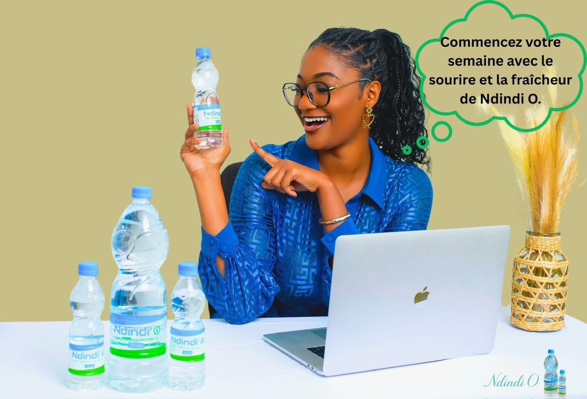
Accueil/Médiathèque
En imagesLa marque,
en images et en vidéo
Le produit, les gestes de production, les moments partagés et le réseau qui fait circuler l'eau Ndindi'O à travers le pays.
L'effort, puis la gorgée
Quelques secondes suffisent à résumer ce que nous cherchons : le moment précis où l'eau devient nécessaire.
Retrouvez l'ensemble de nos vidéos sur notre chaîne YouTube, et suivez l'actualité de la marque sur nos réseaux sociaux.
La marque en mouvement
De la ligne d'embouteillage à la table, en passant par la route : quelques secondes pour voir ce que les photos ne montrent pas.
Toutes nos images
Cliquez sur une image pour l'agrandir. Utilisez les filtres pour naviguer par thème.
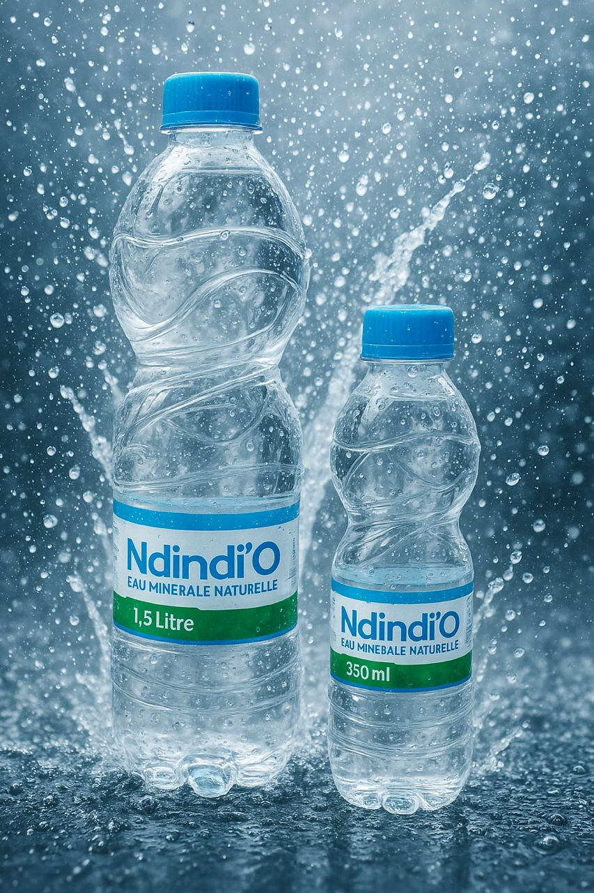

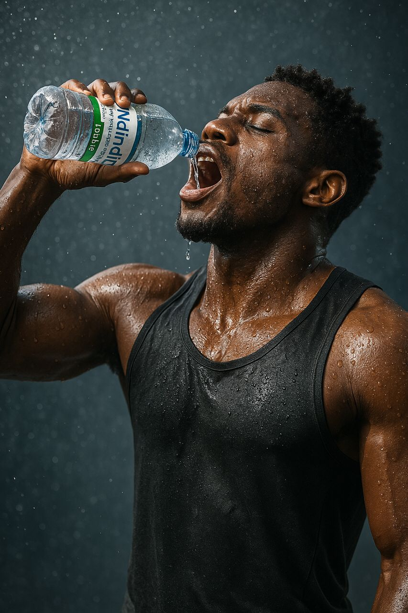
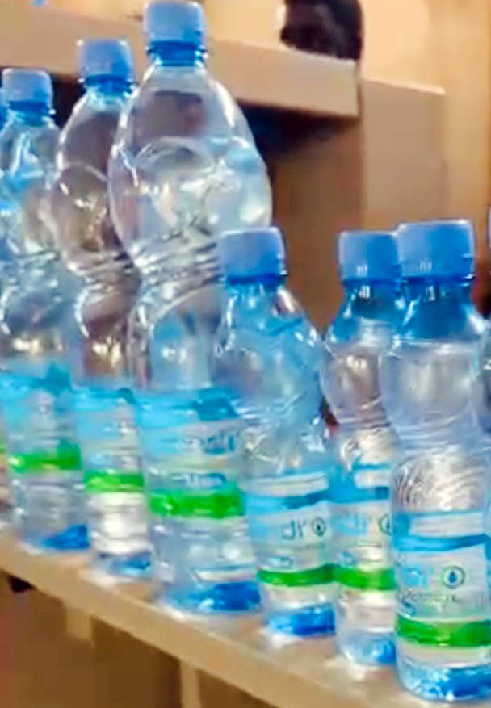
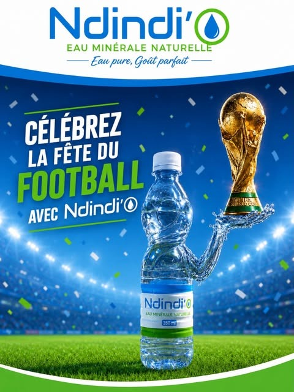

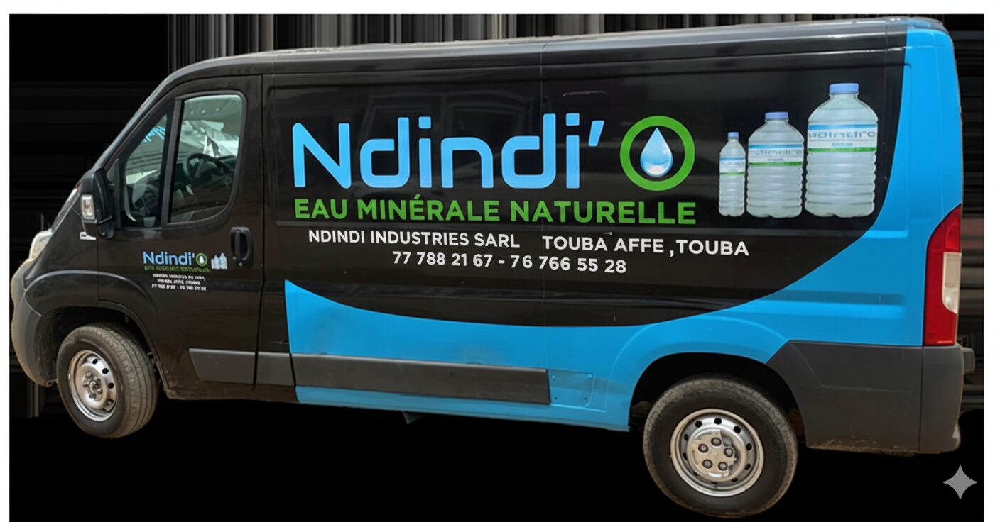
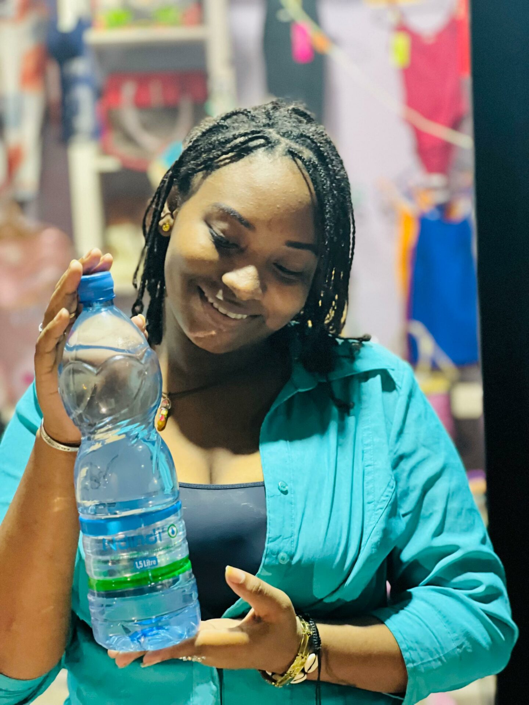
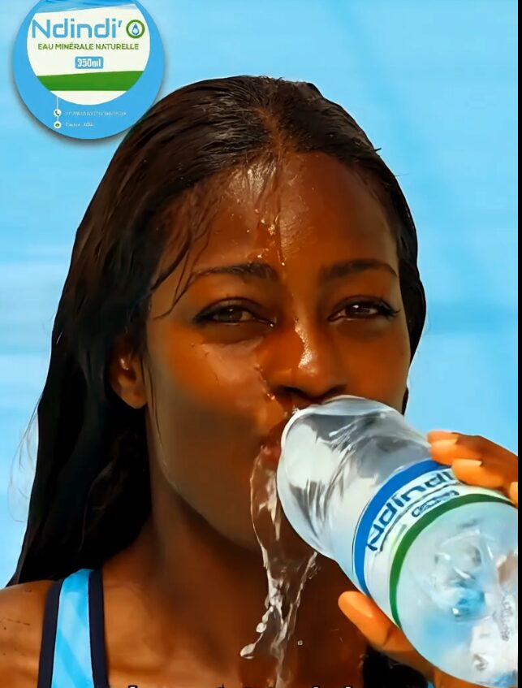
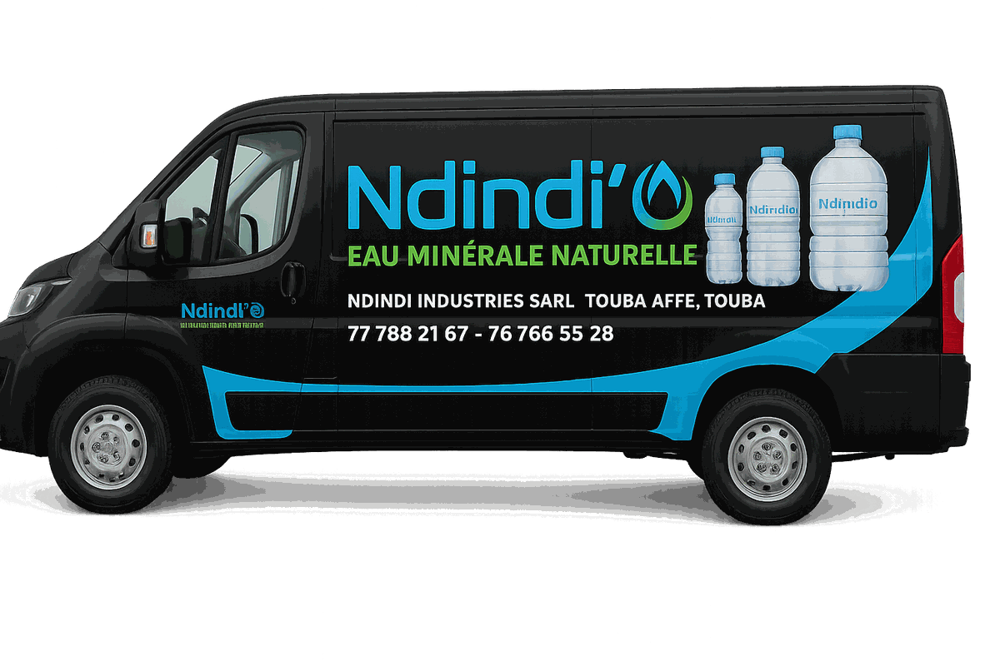
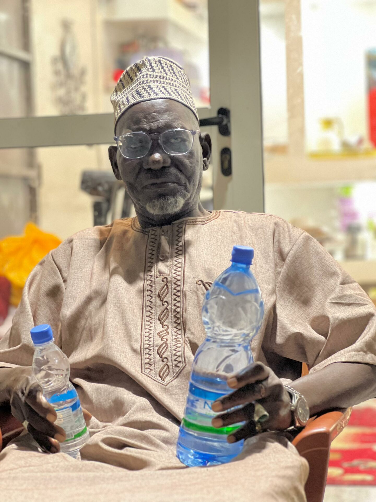
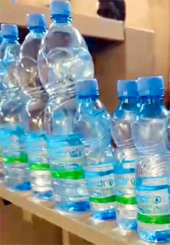
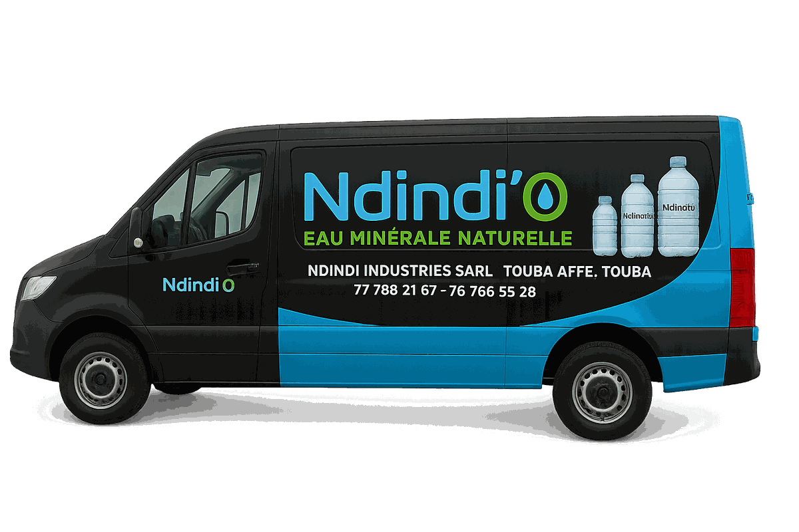
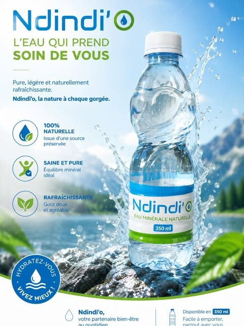
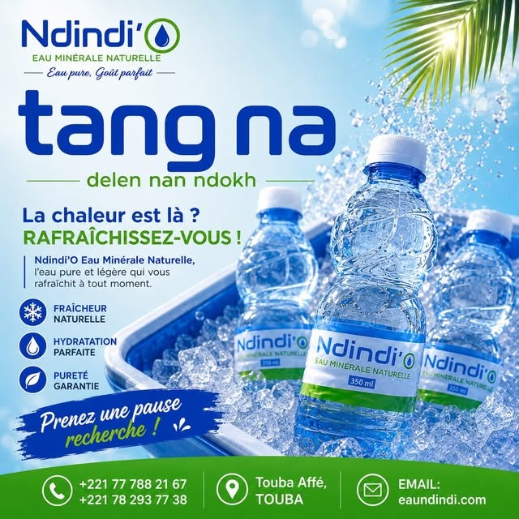
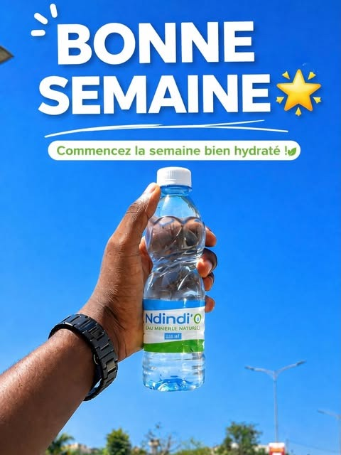
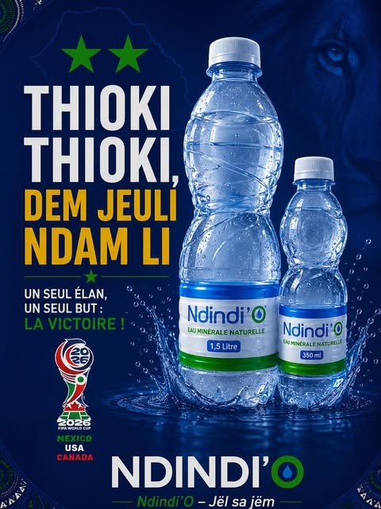
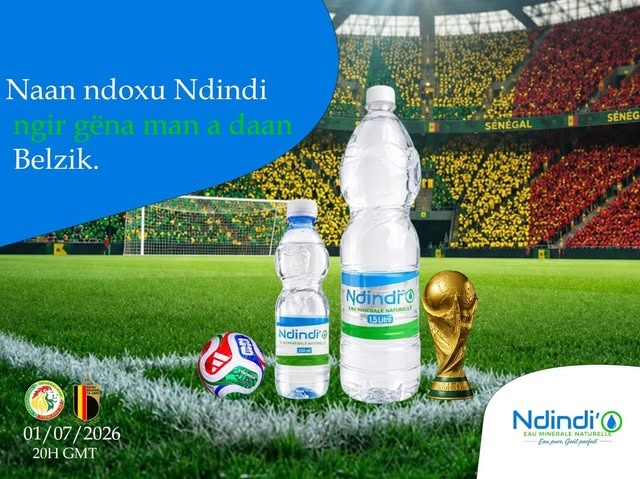
Besoin de visuels en haute définition ?
Journalistes, agences, revendeurs et organisateurs d'événements : nous mettons à disposition le logo, les photos produit et les éléments de marque sur simple demande.